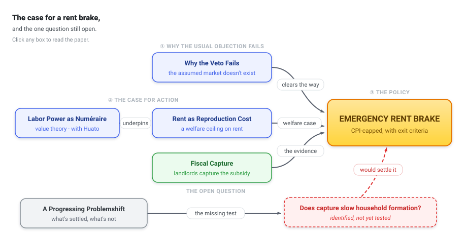

Carlos Galindo Escajeda — Research
Carlos Galindo Escajeda is a quantitative economist who reconstructs unfamiliar problems from first principles — and builds the case to change them. His current work spans the political economy of UK housing and monetary policy, built on a decade in macro-finance and earlier research in poverty measurement.
Most economic research ends at the journal page: it describes a crisis without helping to fix it. This work is built the other way round — from the question of what it would take to change things, proven and able to survive the strongest attack on it.
The flagship is a case for emergency rent regulation, argued on the orthodoxy’s own ground. The standard objection — that price controls choke off supply — is deployed as a conversation-stopper before the evidence is examined; the work shows it is not decisive, because the competitive market it assumes has not existed in Britain’s private rented sector since 1988. A second-best argument removes the presumption against a brake; a difference-in-differences across 290 local authorities yields directional evidence of landlord capture, with zero sign reversals across more than twenty specifications, reported as a conservative lower bound; and a welfare theory grounded in the reproduction of households supplies the rationale.
It also says where it is weakest. A companion paper holds the programme to mainstream philosophy-of-science standards and, against its own immediate advantage, rates it theoretically progressive but only empirically progressing — the one discriminating test is named, but has not yet been run. Naming the open frontier first is the discipline the whole programme runs on.
The same method now reaches monetary policy: a pre-registered test of whether the 2021–24 tightening raised rents returns a robust null — it proves no mechanism, but rules out roughly four-fifths of the one its critics assume; underneath it sits a structural theory of value, risk, and the value of money.
A short film, Quixotic, shows the craft behind the pages: how the work is built, with the human as engineer and today’s AI kept firmly on the loop. What makes it hold up is years of prior expertise, long before any of it ran.
Start with About or the Manifesto. The diagram below maps the housing programme; the full body of work follows by theme.
